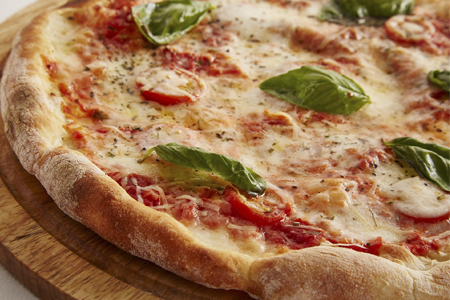

Toata lumea iubeste pizza. Acest fel de mancare de origine italiana este cunoscut in toata lumea, de la Coasta de Vest a Americii pana la tarile din Orientul Indepartat. Desi cuvantul „pizza” isi are originile in Italia secolului X, pizza asa cum o stim astazi a aparut in Napoli in secolul XVIII. De atunci, arta de a face pizza s-a tot dezvoltat, fiind create variante regionale in alte tari ale lumii, adesea destul de diferite de originalul italian - atat ca forma cat si ingrediente.
Un mod bun de a savura gustul unei felii de pizza delicioase este acasa la tine, alaturi de familie sau prieteni. Cu Pizza Online™ poti comanda pizza ta preferata oriunde te-ai afla! Acest website iti ofera 8 feluri de pizza apetisante: de la clasica Margherita la exotica pizza Hawaiiana. Poti citi mai mult despre fiecare fel de pizza pe pagina de meniu, unde sunt afisate si informatii despre ingredientele fiecarei pizza.
